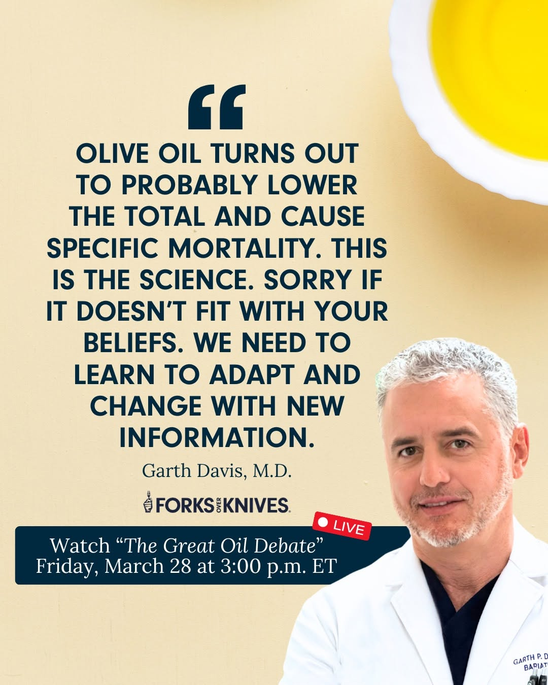

The science is forcing this to happen. At some point, people stand up and say enough is enough, you’re not telling the truth about what the highest quality studies actually show. Intellectual honesty is important. Stop lying to people.
#oliveoilHD #evooHD #esselstynHD #ideologyHD
Is olive oil a wholesome kitchen staple, a dietary landmine, or something in between? The answer depends on who you ask. Forks Over Knives has always shared the advice of whole-food, plant-based (WFPB) pioneers who have long counseled patients to steer clear of all added oils—even olive oil—because they are the world’s most calorie-dense foods, highly refined and stripped of most nutrients.
But not all experts in the WFPB space agree, and we believe our audience deserves to hear what they have to say. Enter The Great Oil Debate, our bid to shine a light on how leading plant-based physicians and nutritionists currently think about added oils in the diet. We’re kicking off the conversation on March 28 with a live debate featuring two big voices in the plant-based world: Garth Davis, M.D., board-certified bariatric surgeon, obesity medicine specialist, and author of Proteinaholic: How Our Obsession With Meat Is Killing Us and What We Can Do About It, and Rip Esselstyn, founder of PLANTSTRONG Foods and author of several books, including The Engine 2 Diet series.
In the lead-up to the debate, Forks Over Knives has interviewed a dozen other leading WFPB experts about how they view culinary oils today, to capture a broader spectrum of perspectives. On the day of the debate, we’ll be publishing an in-depth article on forksoverknives.com featuring their insights, giving you an even fuller picture of the ongoing conversation. Register to join live FREE - link in first comment on this post.
